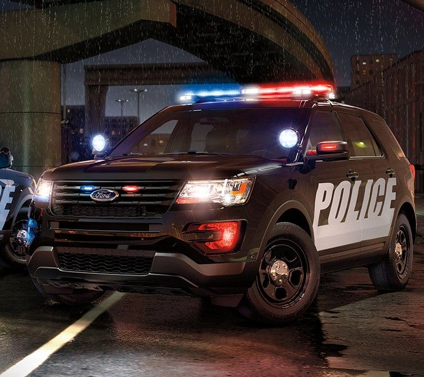
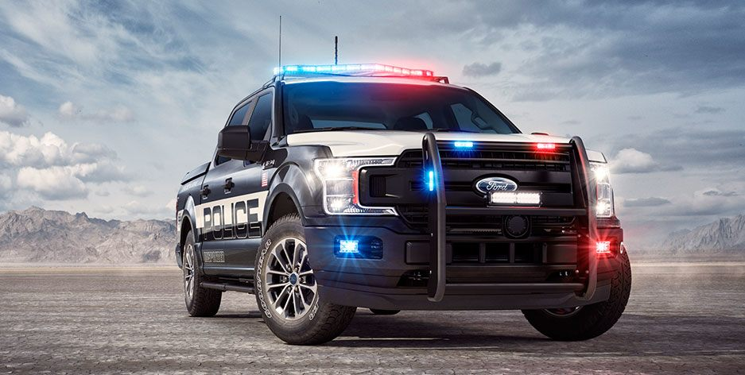
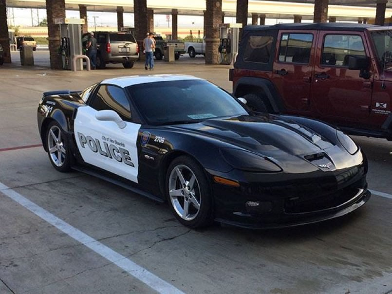
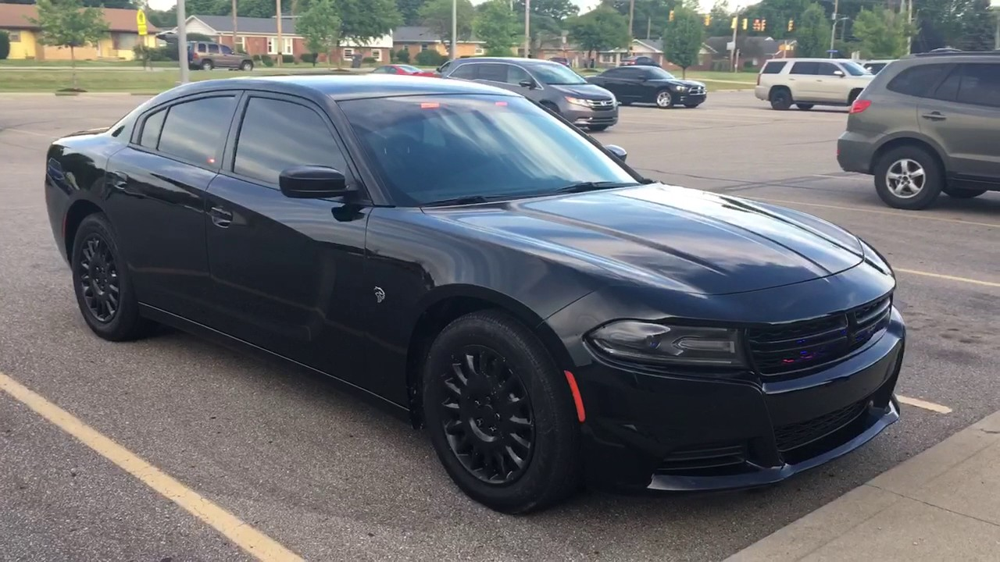

Check out the finest police vehicles used by common Police Departments, including Los Angeles Police Department.
Common police vehicles are as follows.
| Car | Model | Manufacturer |
|---|---|---|
|  | Explorer |  |
|  | F-150 | |
|  | Corvette |  |
|  | Unmarked Charger |
//Here is the cops spilling coffee.
public class lol
{
public static void main(String [] args) {
System.out.println(" xxxxxxxxxxxxxx ");
System.out.println(" x x ");
System.out.println(" x Oops x ");
System.out.println(" x x ");
System.out.println(" x Spilled xxxx ");
System.out.println(" x my x x ");
System.out.println(" x coffee x x ");
System.out.println(" xxxxxxxxxxxxxxxxx ");
System.out.println(" o l ");
System.out.println(" l r ");
System.out.println(" l o ");
System.out.println(" e W ");
System.out.println(" H d ");
System.out.println(" ");
}
}